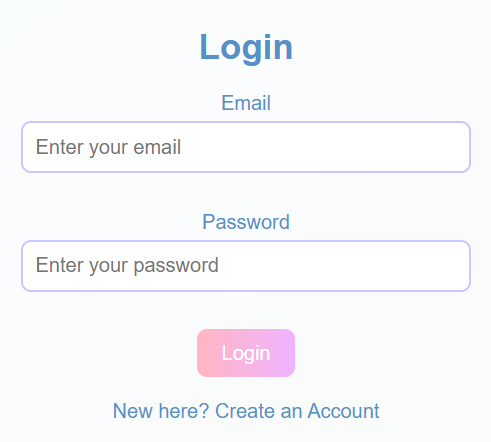
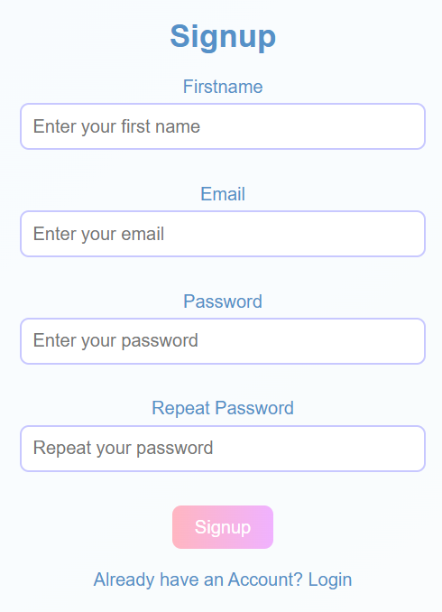
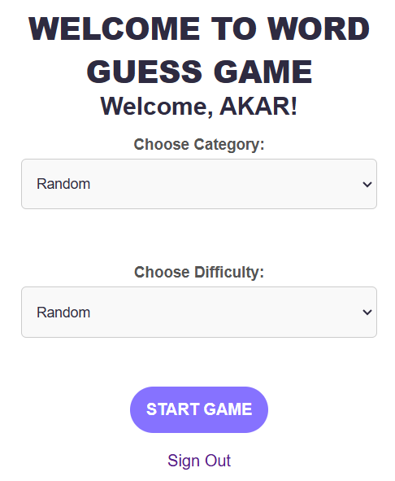
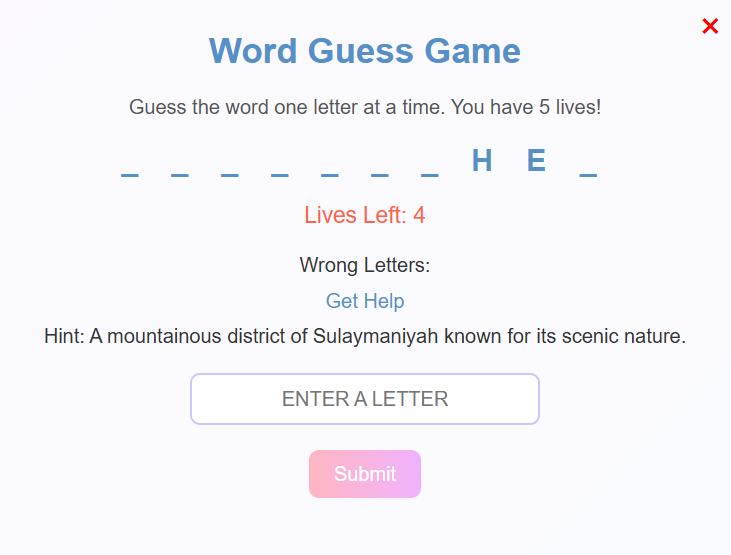
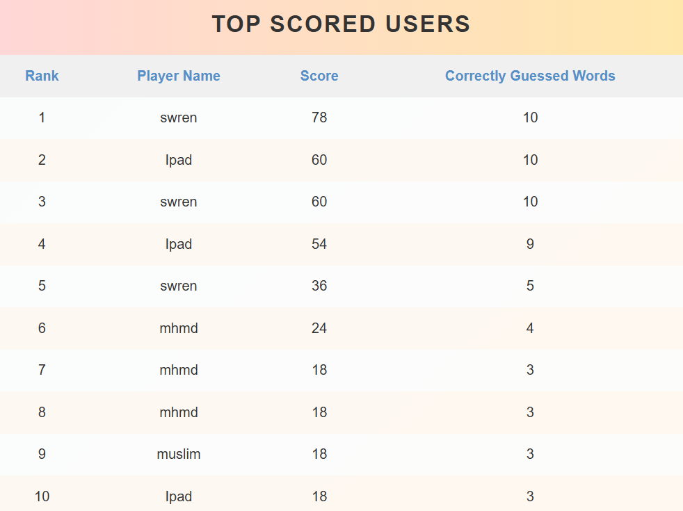

Project Documentation
Data Structure Concepts Used
Login Page

Hash Tables:
- Usage: Efficiently storing and retrieving user credentials in the login route.
- How: The users table in the MySQL database functions like a hash table, where the email
acts as the key and user details (like password) are the values.
- Benefit: Fast lookup for user credentials, allowing for quick login authentication.
Lists or Arrays:
- Usage: Temporarily holding data, such as form inputs during login.
- How: User inputs (like email and password) are stored in variables (arrays or lists).
- Benefit: Organizes and stores data for easy manipulation and retrieval.
Signup Page

Hash Tables:
- Usage: Efficiently storing and retrieving user credentials in the signup route.
- How: The users table in the MySQL database functions like a hash table, where the email
acts as the key and user details (like password) are the values.
- Benefit: Fast lookup for user credentials, allowing for quick signup processing.
Lists or Arrays:
- Usage: Temporarily holding data, such as form inputs during signup.
- How: User inputs (like firstname, email, and password) are stored in variables (arrays
or lists).
- Benefit: Organizes and stores data for easy manipulation and retrieval.
Home Page

HTML Forms (List-like structure):
- Usage: The form elements, particularly the dropdown menus (select), are used to
collect user choices for the game, such as category and difficulty level.
- How: The values of the dropdown options are presented in a list, and when the form is
submitted, the selected values are passed to the server in the form of category and difficulty
parameters.
- Benefit: Provides a way for the user to select options from a list of categories and
difficulties, which will guide the game behavior.
Session Variables (Dictionary-like structure):
- Usage: The username is passed from the session variable and dynamically inserted into
the page.
- How: The session variable stores the user's information (in this case, username) after
login, and this data is accessed to personalize the welcome message on the home page.
- Benefit: Allows persistent user-specific data (like the logged-in username) to be
easily accessed across different pages.
Database Tables:
- Usage: Though not directly visible in the HTML code, the game logic relies on data
stored in MySQL tables for categories (like kurdish-city, footballer, etc.) and difficulty levels (Easy,
Normal, Difficult).
- How: The game logic queries the database for words corresponding to the selected
category and difficulty. This information is fetched from the database tables (e.g., the word table).
- Benefit: The structured data in the database provides efficient and dynamic content for
the game based on user preferences.
Game Page

Queue (Array-like structure):
- Usage: The wordQueue array is used to manage the order of words for the game. The first
word is dequeued (shift()) and used as the word to guess.
- How: Each time a word is guessed correctly or the game progresses, the next word in the
queue is dequeued and used in the game.
- Benefit: Ensures words are presented in a sequential manner and can easily be rotated
with each new round of guessing.
Array (List-like structure):
- Usage: The guessedWord array stores the current state of the word being guessed, with
each letter either revealed or replaced by underscores (_).
- How: It is updated every time the user guesses a letter correctly, and is displayed to
the player as a series of underscores and letters.
- Benefit: Keeps track of the word's current state and updates the game view dynamically.
Set (For unique guesses):
- Usage: The guessedLetters set tracks which letters have already been guessed to avoid
duplicates.
- How: When a new guess is made, it checks if the letter has been guessed before. If not,
it adds the letter to the set.
- Benefit: Ensures that the user can't guess the same letter more than once, improving
gameplay.
Array (For wrong guesses):
- Usage: The wrongLetters array stores the letters that were incorrectly guessed.
- How: Each time a guess is incorrect, the letter is added to the wrongLetters array and
displayed on the page.
- Benefit: Keeps track of incorrect guesses and helps the user remember which letters
they have already tried.
Object (For storing guessed words and scores):
- Usage: The guessedWords array stores objects representing the words that the player has
guessed correctly, along with the points awarded for each word.
- How: Each time a word is correctly guessed, an object containing the word and its
associated points is pushed to the guessedWords array.
- Benefit: Helps in tracking the words guessed, the associated points, and calculating
the player's final score.
Integer (For lives and scores):
- Usage: The lives variable tracks the remaining number of guesses the player has. The
totalScore variable stores the player's accumulated score.
- How: The lives count is decreased with each incorrect guess, and totalScore is updated
based on the difficulty level and points for each word guessed.
- Benefit: Manages the game's progress and determines when the player wins or loses.
Dictionary (for Word Data):
- Usage: The word data, such as wordToGuess, wordDifficulty, and wordHint, are fetched
from the server and stored in variables. Each word is associated with its difficulty, hint, and the word
itself.
- How: When the game starts, a word object is retrieved from the session's words array
and its attributes (word, difficulty, and hint) are used throughout the game.
- Benefit: Organizes related data about each word in a structured way, making it easier
to handle during the game.
Session (For storing user game data):
- Usage: The session is used to store the list of words (session['words']) fetched from
the database, allowing the game to access them between requests.
- How: On page load, the words are retrieved from the session and used to initialize the
game.
- Benefit: Persists user-specific data between requests, enabling a smooth gaming
experience even if the page reloads.
MySQL Database (For storing and retrieving scores):
- Usage: The game data, including user scores and guessed words, are stored in a MySQL
database.
- How: After the game ends, the final score is sent to the server and saved in the
database via the /save_score route.
- Benefit: Stores player scores and progress, allowing for leaderboards and persistent
tracking of users' game performance.
Leaderboard Page

Leaderboard Data:
- List of Dictionaries (Leaderboard): The top 10 leaderboard entries are fetched from the
database as a list of dictionaries, each representing a player's score and guesses.
- How: This list is then passed to the HTML template for rendering. Each dictionary
contains details such as player_name, score, and guesses.
User's Last Score:
- Dictionary (User's Score): The current user's last score and guesses are fetched as a
dictionary.
- How: This dictionary is then used to display the user's most recent game score and the
number of words they guessed correctly.
Rendering Data with Loops (HTML Template):
- Looping through the leaderboard: In the HTML template, a loop ({% for player in
leaderboard %}) iterates over the leaderboard list, displaying each player's name, score, and correctly
guessed words. The use of loop.index in the template adds a ranking to each player, showing the top
players first.
- Highlighting the Top Player: The highlight class is applied to the top-ranked player
(the first player in the list) using the loop index.
MySQL Database as Data Storage:
- Usage: The leaderboard and user score information are stored in a relational database
using the score table, and user information is retrieved from the users table. SQL queries like JOIN and
ORDER BY are used to fetch the top players and the current user's last game score.
Data Flow:
- Usage: The server (Flask) queries the database and returns the results as Python data
structures (lists and dictionaries).
- How: These data structures are passed to the HTML template and rendered using Jinja2
templating engine syntax.
Data Structures Breakdown:
- List of Dictionaries:
- leaderboard: A list where each element is a dictionary containing a player's name,
score, and the number of correctly guessed words.
- Dictionary:
- last_score: A dictionary containing the user's score and the number of correctly
guessed words.
Database Tables
Usage: Structured storage for persistent data such as user details and game scores.
How: Tables like users (for user info) and score (for storing game scores) are used. The
primary key (email for users) maps to user details.
Benefit: Provides secure, long-term storage for user and game data, ensuring structured
access.